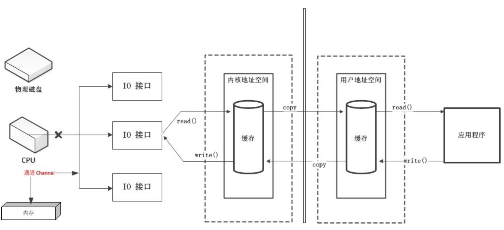
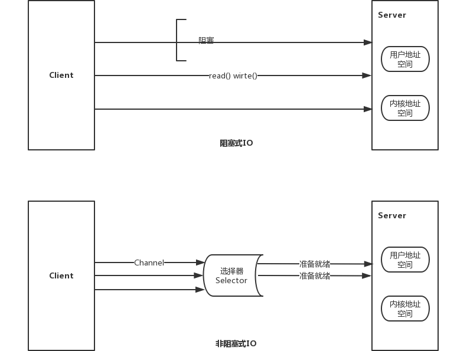

- 通道Channel: 负责源节点与目标节点的连接,在NIO中负责缓冲区中数据的传输

- Java为Channel接口提供的实现类
- FileChannel: 用于读取、写入、映射和操作文件的tong通道
- DatagramChannel: 通过UDP读写网络中的数据通道
- SocketChannel: 通过TCP读取网络中的数据
- ServerSocketChannel: 可以监听新来的TCP连接,对每一个新来的连接创建SocketChannel
- 获取方式
- Java针对支持通道的类提供了getChannel()方法
- 本地IO: FileInputStream/FileOutputStream/RandomAccessFile
- 网络IO: Socket/ServerSocket/DatagramSocket
- JDK1.7中的NIO2提供了针对各个通道的静态方法open()
- JDK1.7中的NIO2提供了File工具类newByteChannel()
- 使用非直接缓冲区进行数据传输
@Test
public void test1() throws IOException {
//创建输入输出流
FileInputStream fileInputStream = new FileInputStream("1.png");
FileOutputStream fileOutputStream = new FileOutputStream("2.png");
//通过流获取通道
FileChannel fileInputChannel = fileInputStream.getChannel();
FileChannel fileOutputChannel = fileOutputStream.getChannel();
//分配指定大小的缓冲区
ByteBuffer buffer = ByteBuffer.allocate(1024);
//将通道中的数据存入缓冲区
while ((fileInputChannel.read(buffer)) != -1) {
buffer.flip(); //切换到读取数据模式
fileOutputChannel.write(buffer); //向通道中写数据
buffer.clear(); //清空缓冲区
}
//关闭通道和流
fileInputChannel.close();
fileOutputChannel.close();
fileInputStream.close();
fileOutputStream.close();
}
- 使用直接缓冲区进行文件传输
@Test
public void test2() throws IOException {
//读模式通道
FileChannel inChannel = FileChannel.open(Paths.get("1.png"), StandardOpenOption.READ);
//写模式通道
FileChannel outChannel = FileChannel.open(Paths.get("3.png"), StandardOpenOption.WRITE, StandardOpenOption.READ, StandardOpenOption.CREATE_NEW);
//内存映射文件
MappedByteBuffer inMappedByteBuffer = inChannel.map(MapMode.READ_ONLY, 0, inChannel.size());
MappedByteBuffer outMappedByteBuffer = outChannel.map(MapMode.READ_WRITE, 0, inChannel.size());
//直接对缓冲区进行数据读写操作
byte [] dst = new byte[inMappedByteBuffer.limit()];
inMappedByteBuffer.get(dst);
outMappedByteBuffer.put(dst);
//关闭通道
inChannel.close();
outChannel.close();
}
- 通道间的文件传输
@Test
public void test3() throws IOException {
//读模式通道
FileChannel inChannel = FileChannel.open(Paths.get("1.png"), StandardOpenOption.READ);
//写模式通道
FileChannel outChannel = FileChannel.open(Paths.get("4.png"), StandardOpenOption.WRITE, StandardOpenOption.READ, StandardOpenOption.CREATE_NEW);
inChannel.transferTo(0, inChannel.size(), outChannel);
inChannel.close();
outChannel.close();
// outChannel.transferFrom(inChannel, 0, inChannel.size());
}
- 分散与聚集
- 分散读取: 将通道中的数据存放到多个缓冲区中
- 聚集写入: 将多个缓冲区的数据聚集到通道中
@Test
public void test4() throws IOException {
RandomAccessFile randomAccessFile = new RandomAccessFile("1.txt", "rw");
//获取通道
FileChannel inChannel = randomAccessFile.getChannel();
//分散指定的缓冲区
ByteBuffer buffer1 = ByteBuffer.allocate(100);
ByteBuffer buffer2 = ByteBuffer.allocate(1024);
//分散读取
ByteBuffer [] buffers = {buffer1, buffer2};
inChannel.read(buffers);
//切换到读模式
for (ByteBuffer buffer : buffers) {
buffer.flip();
}
//读取数据
System.out.println(new String(buffers[0].array(), 0, buffers[0].limit()));
System.out.println(new String(buffers[1].array(), 0, buffers[1].limit()));
//聚集写入
RandomAccessFile randomAccessFile2 = new RandomAccessFile("2.txt", "rw");
FileChannel outChannel = randomAccessFile2.getChannel();
outChannel.write(buffers);
}
- 字符集
- 阻塞IO与非阻塞IO

- 非阻塞IO实现
//客户端
@Test
public void client() throws IOException {
//1. 获取通道
SocketChannel sChannel = SocketChannel.open(new InetSocketAddress("127.0.0.1", 9898));
FileChannel fileInChannel = FileChannel.open(Paths.get("1.txt"), StandardOpenOption.READ);
//2. 分配指定大小的缓冲区
ByteBuffer byteBuffer = ByteBuffer.allocate(1024);
//3. 读取本地文件并发送到服务端
while (fileInChannel.read(byteBuffer) != -1) {
byteBuffer.flip();
sChannel.write(byteBuffer);
byteBuffer.clear();
}
sChannel.shutdownOutput();
//接收服务端的反馈
int len = 0;
while ((len = sChannel.read(byteBuffer)) != -1) {
byteBuffer.flip();
System.out.println(new String(byteBuffer.array(), 0, len));
byteBuffer.clear();
}
//4. 关闭通道
fileInChannel.close();
sChannel.close();
}
//服务端
@Test
public void server() throws IOException {
//1. 获取通道
ServerSocketChannel serverSocketChannel = ServerSocketChannel.open();
FileChannel fileOutChannel = FileChannel.open(Paths.get("111.txt"), StandardOpenOption.WRITE, StandardOpenOption.CREATE);
//2. 绑定连接
serverSocketChannel.bind(new InetSocketAddress(9898));
//3. 获取连接通道
SocketChannel sChannel = serverSocketChannel.accept();
//4. 分配缓冲区
ByteBuffer byteBuffer =ByteBuffer.allocate(1024);
//5. 接受客户端信息并保存到本地
while (sChannel.read(byteBuffer) != -1) {
byteBuffer.flip();
fileOutChannel.write(byteBuffer);
byteBuffer.clear();
}
//向客户端发送信息
byteBuffer.put("服务端接收成功!".getBytes());
byteBuffer.flip();
sChannel.write(byteBuffer);
//6. 关闭通道
serverSocketChannel.close();
sChannel.close();
fileOutChannel.close();
}
- 非阻塞IO实现
//客户端
@Test
public void client() throws IOException {
//1. 获取通道
SocketChannel sChannel = SocketChannel.open(new InetSocketAddress("127.0.0.1", 9898));
//2. 切换为非阻塞模式
sChannel.configureBlocking(false);
//3. 分配指定大小的缓冲区
ByteBuffer byteBuffer = ByteBuffer.allocate(1024);
//4. 发送数据给服务器
byteBuffer.put(new Date().toString().getBytes());
byteBuffer.flip();
sChannel.write(byteBuffer);
//5. 关闭通道
sChannel.close();
}
//服务端
@Test
public void server() throws IOException {
//1. 获取通道
ServerSocketChannel serverSocketChannel = ServerSocketChannel.open();
//2. 切换为非阻塞模式
serverSocketChannel.configureBlocking(false);
//3. 绑定连接
serverSocketChannel.bind(new InetSocketAddress(9898));
//4. 获取选择器
Selector selector = Selector.open();
//5. 将通道注册到选择器上,指定监听事件为接受事件
serverSocketChannel.register(selector, SelectionKey.OP_ACCEPT);
//6. 轮巡获取选择器中已准备就绪的连接
while (selector.select() > 0) {
//7. 获取当前选择器中所有注册的选择键(已就绪的监听事件)
Iterator<SelectionKey> iterator = selector.selectedKeys().iterator();
while (iterator.hasNext()) {
//8. 获取准备就绪的事件
SelectionKey selectionKey = iterator.next();
//9. 判断什么事件准备就绪
if (selectionKey.isAcceptable()) {
//10. 若接受就绪则获取客户端的连接
SocketChannel sChannel = serverSocketChannel.accept();
//11. 客户端连接通道切换为非阻塞模式
sChannel.configureBlocking(false);
//12. 将该通道注册到选择器中,指定监听事件为读事件
sChannel.register(selector, SelectionKey.OP_READ);
} else if (selectionKey.isReadable()) {
//13. 获取当前选择器读状态的通道
SocketChannel sChannel = (SocketChannel) selectionKey.channel();
//14. 读取数据
ByteBuffer byteBuffer = ByteBuffer.allocate(1024);
int len = 0;
while ((len = sChannel.read(byteBuffer)) > 0) {
byteBuffer.flip();
System.out.println(new String(byteBuffer.array(), 0, len));
byteBuffer.clear();
}
}
//取消选择键
iterator.remove();
}
}
}
- DatagramChannel
//客户端
@Test
public void client() throws IOException {
DatagramChannel datagramChannel = DatagramChannel.open();
datagramChannel.configureBlocking(false);
ByteBuffer buffer = ByteBuffer.allocate(1024);
Scanner scanner = new Scanner(System.in);
while (scanner.hasNext()) {
String string = scanner.next();
buffer.put((new Date().toString() + "\n" + string).getBytes());
buffer.flip();
datagramChannel.send(buffer, new InetSocketAddress("127.0.0.1", 9898));
buffer.clear();
}
datagramChannel.close();
}
//服务端
@Test
public void server() throws IOException {
DatagramChannel datagramChannel = DatagramChannel.open();
datagramChannel.configureBlocking(false);
datagramChannel.bind(new InetSocketAddress(9898));
Selector selector = Selector.open();
datagramChannel.register(selector, SelectionKey.OP_READ);
while (selector.select() > 0) {
Iterator<SelectionKey> iterator = selector.selectedKeys().iterator();
while (iterator.hasNext()) {
SelectionKey selectionKey = iterator.next();
if (selectionKey.isReadable()) {
ByteBuffer buffer = ByteBuffer.allocate(1024);
datagramChannel.receive(buffer);
buffer.flip();
System.out.println(new String(buffer.array(), 0, buffer.limit()));
buffer.clear();
}
}
iterator.remove();
}
}